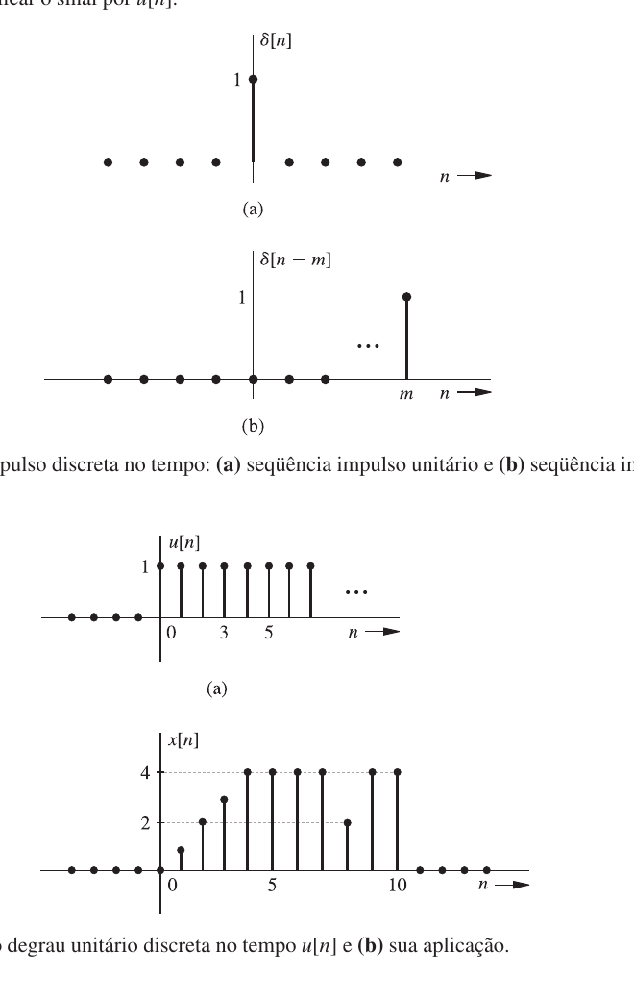
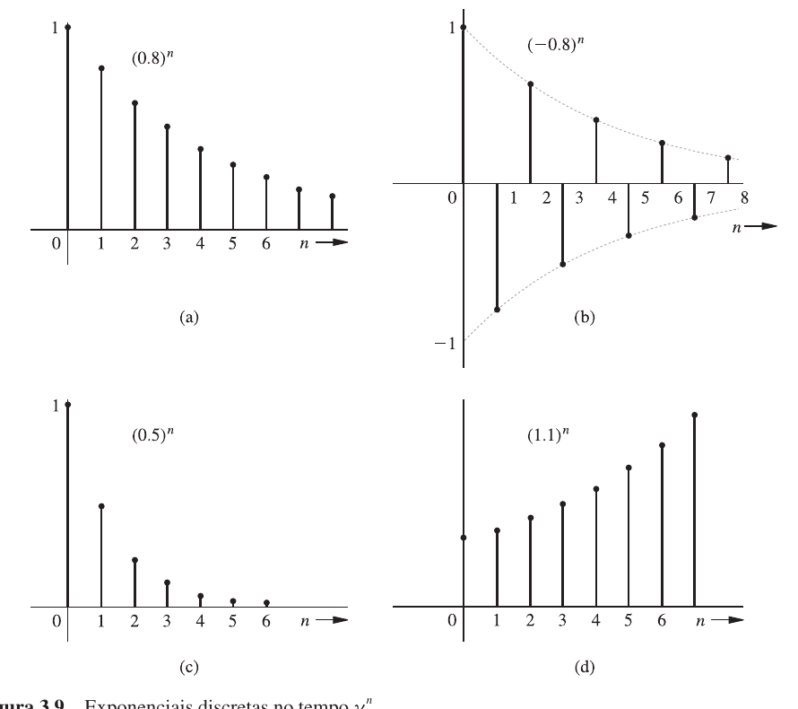
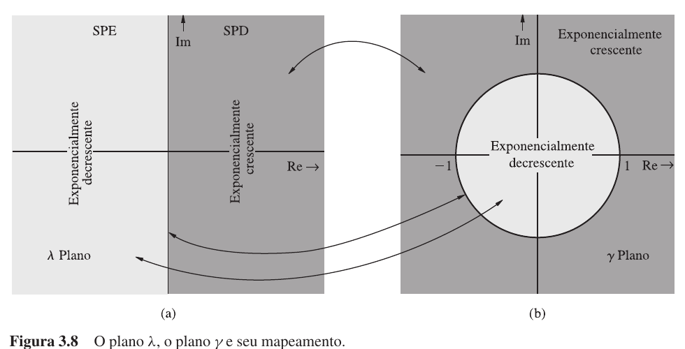
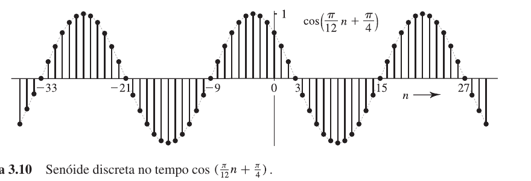
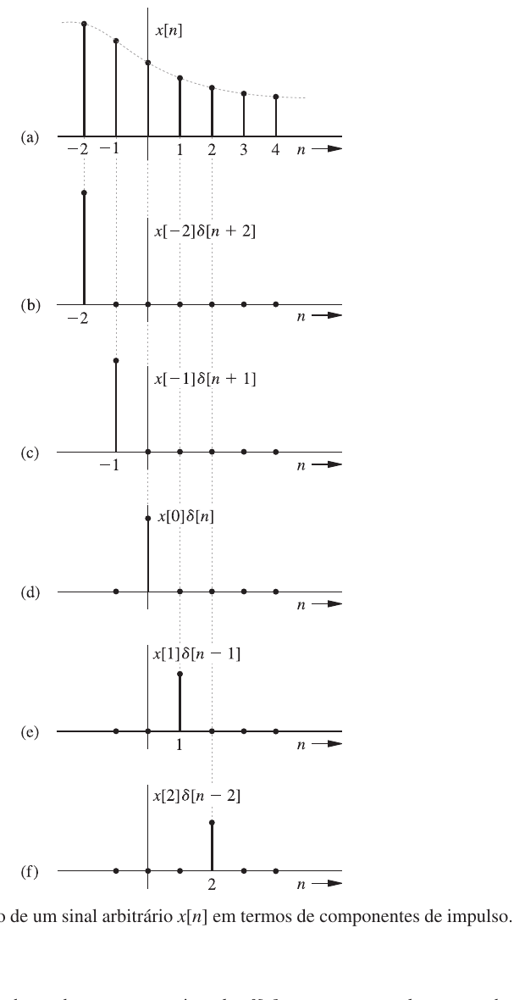
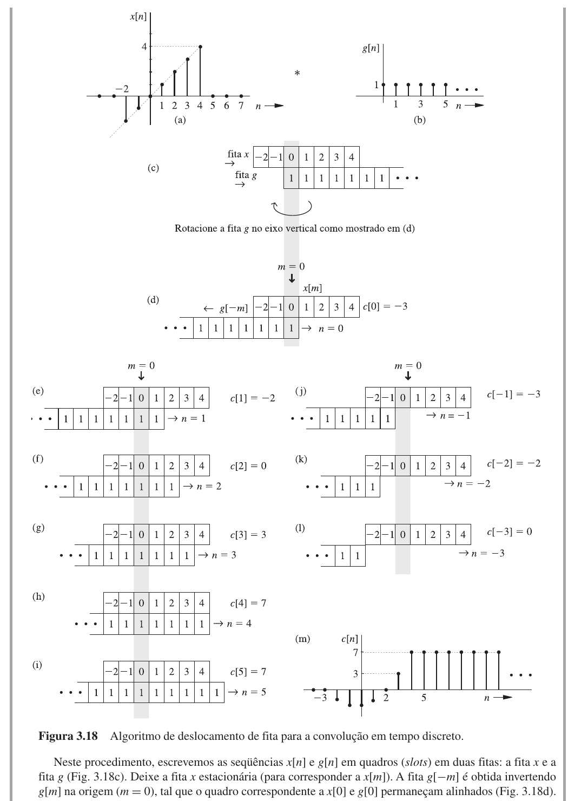

Introdução11.1
Hoje você vai trabalhar pela primeira vez não com funções do tempo contínuo, mas com sequências. A diferença é brutal.
Nas últimas aulas, você viu a Transformada de Fourier, o teorema da amostragem e a conversão A/D, TDF e FFT. A pergunta central era: como sair de um sinal físico e chegar a uma lista de números que um computador possa processar?
Agora a pergunta muda. Você já tem as amostras. Como processá-las?
Quando você escreve
$$ x[n]=x(nT) $$
não está apenas trocando parênteses por colchetes. Está trocando de objeto matemático. O sinal deixa de ser uma função de $t$ contínuo e vira uma sequência indexada por inteiros. O índice $n$ não percorre instantes. Percorre posições.
Um sinal discreto é uma sequência de valores. Sistemas discretos processam essas sequências por equações de diferenças. Para sistemas lineares e invariantes no tempo, a resposta a qualquer entrada pode ser obtida pela convolução discreta entre a entrada e a resposta ao impulso.
Do sinal amostrado para a sequência11.2
Suponha que um sinal contínuo $x(t)$ seja amostrado a cada $T$ segundos. A sequência correspondente é
$$ x[n]=x(nT), \quad n\in\mathbb{Z} $$
$T$ pertence ao processo físico de amostragem. $n$ é apenas um contador inteiro. Por isso, ao desenhar $x[n]$, você usa hastes, não uma curva contínua. Entre $x[2]$ e $x[3]$ não existe automaticamente um valor de $x[2{,}5]$ dentro do modelo discreto.
Essa distinção evita um erro comum: pensar que uma sequência discreta é uma curva contínua desenhada com poucos pontos. Não é. Uma sequência é uma lista ordenada de valores.
| Notação | Leitura | Tipo de variável |
|---|---|---|
| $x(t)$ | sinal contínuo no tempo | $t$ real |
| $x[n]$ | sinal discreto no tempo | $n$ inteiro |
| $x(nT)$ | amostra do sinal contínuo | $n$ inteiro, $T$ fixo |
Na prática de processamento digital de sinais, essa sequência pode representar amostras de áudio, amostras de tensão, pixels de uma imagem, medições de um sensor ou valores já calculados por um algoritmo.
Impulso e degrau discretos11.3
Dois sinais aparecem o tempo todo em sistemas discretos: o impulso unitário e o degrau unitário.
O impulso unitário discreto (delta de Kronecker) é definido por
$$ \delta[n]= \begin{cases} 1, & n=0\\ 0, & n\ne 0 \end{cases} $$
O impulso deslocado $\delta[n-m]$ vale $1$ em $n=m$ e $0$ nos demais índices. Ele marca uma única posição da sequência.
O degrau unitário discreto é definido por
$$ u[n]= \begin{cases} 1, & n\ge 0\\ 0, & n<0 \end{cases} $$
Multiplicar uma sequência por $u[n]$ é uma forma simples de dizer que ela começa em $n=0$. Se você quiser escrever "uma exponencial que começa em $n=0$ e vale zero antes disso", escreve $\gamma^n u[n]$. Sem o $u[n]$, a expressão $\gamma^n$ estaria definida para índices negativos, o que pode não ser o desejado.
Outra utilidade do degrau é criar janelas de duração finita. O sinal
$$ u[n]-u[n-5] $$
vale $1$ para $n=0,1,2,3,4$ e $0$ nos demais índices. É um pulso retangular discreto de largura $5$.
A Figura 11.1 mostra o impulso e o degrau discretos lado a lado.

Existe uma relação muito útil entre os dois. O degrau pode ser escrito como soma acumulada de impulsos:
$$ u[n]=\sum_{k=-\infty}^{n}\delta[k] $$
Isso faz sentido: para $n<0$, a soma é vazia (zero). Para $n=0$, o impulso em $k=0$ contribui com $1$ e a soma passa a ser $1$. Para $n>0$, a soma permanece $1$ porque todos os outros impulsos são zero.
Inversamente, o impulso pode ser obtido como a diferença entre dois degraus consecutivos:
$$ \delta[n]=u[n]-u[n-1] $$
Essa relação é a contrapartida discreta do fato de que, no tempo contínuo, a derivada do degrau é o impulso.
O impulso discreto $\delta[n]$ é uma sequência comum: vale $1$ em um ponto e $0$ nos outros. Ele não possui as sutilezas do impulso de Dirac $\delta(t)$, que exige a teoria de distribuições para ser definido com rigor.
Sequências exponenciais11.4
Uma das famílias mais importantes em tempo discreto é a exponencial
$$ \gamma^n $$
O número $\gamma$ pode ser real ou complexo. Se $\gamma$ é real e positivo, o comportamento é direto:
| Valor de $\gamma$ | Comportamento de $\gamma^n$ |
|---|---|
| $0<\gamma<1$ | decai com $n$ |
| $\gamma=1$ | permanece constante |
| $\gamma>1$ | cresce com $n$ |
Se $\gamma$ é real e negativo, a sequência alterna sinal a cada amostra. Por exemplo, $(-0{,}8)^n$ tem módulo decrescente, mas muda de positivo para negativo sucessivamente: $(-0{,}8)^0=1$, $(-0{,}8)^1=-0{,}8$, $(-0{,}8)^2=0{,}64$, $(-0{,}8)^3=-0{,}512$ e assim por diante.
A Figura 11.3 mostra três exponenciais discretas com comportamentos diferentes.

Para sinais e sistemas discretos, é muito útil enxergar $\gamma$ no plano complexo. O círculo unitário separa crescimento e decaimento:
| Posição de $\gamma$ | Comportamento de $\gamma^n$ |
|---|---|
| $|\gamma|<1$ | decai |
| $|\gamma|=1$ | mantém módulo constante |
| $|\gamma|>1$ | cresce |
A Figura 11.2 mostra essa classificação no plano complexo.

Em tempo contínuo, a região de decaimento era o semiplano esquerdo. Por que em tempo discreto a região é o interior do círculo unitário? O que muda na natureza do sistema quando você troca equações diferenciais por equações de diferenças?
A resposta está na relação entre o operador de atraso e a variável $\gamma$. Em tempo contínuo, os modos naturais são $e^{\lambda t}$, e $\operatorname{Re}(\lambda)<0$ garante decaimento. Em tempo discreto, os modos são $\gamma^n$, e $|\gamma|<1$ garante decaimento. O círculo unitário ocupa, no plano discreto, o papel que o eixo imaginário ocupa no plano contínuo.
Classifique o comportamento das sequências:
$$ x_1[n]=(0{,}7)^n u[n] $$
$$ x_2[n]=(-0{,}7)^n u[n] $$
$$ x_3[n]=(1{,}2)^n u[n] $$
Para $x_1[n]$, $|0{,}7|<1$. A sequência decai sem alternar sinal.
Para $x_2[n]$, $|-0{,}7|<1$. A sequência decai em módulo, mas alterna sinal porque a base é negativa.
Para $x_3[n]$, $|1{,}2|>1$. A sequência cresce com $n$.
Qual dessas três sequências poderia ser a resposta ao impulso de um sistema estável?
Senoides discretas11.5
Uma senoide discreta pode ser escrita como
$$ x[n]=C\cos(\Omega n+\theta) $$
$C$ é a amplitude, $\theta$ é a fase e $\Omega$ é a frequência angular discreta, medida em radianos por amostra.
Também podemos escrever
$$ \Omega=2\pi F $$
em que $F$ é medida em ciclos por amostra. Se $F=1/10$, são necessárias $10$ amostras para completar um ciclo.
A Figura 11.4 mostra uma senoide discreta típica.

Se uma senoide contínua $\cos(\omega t)$ é amostrada com período $T$, então
$$ x[n]=\cos(\omega nT) $$
ou seja,
$$ x[n]=\cos(\Omega n), \quad \Omega=\omega T $$
Essa relação mostra por que a frequência discreta depende da taxa de amostragem. A mesma senoide física gera sequências diferentes se você mudar $T$.
A conversão $\Omega=\omega T$ é a mesma que você já viu na aula de amostragem. A diferença é que agora você não está pensando em reconstruir o sinal contínuo, e sim em trabalhar diretamente com a sequência.
Periodicidade da senoide discreta11.5.1
No tempo contínuo, $\cos(\omega t)$ é sempre periódico. No tempo discreto, não é mais verdade. Para que $\cos(\Omega n)$ seja periódico, é necessário que a cada $N_0$ amostras a senoide complete um número inteiro de ciclos. Deve existir um inteiro $N_0>0$ e um inteiro $m$ tais que
$$ \Omega N_0=2\pi m $$
ou, de forma equivalente,
$$ \frac{\Omega}{2\pi}=\frac{m}{N_0} $$
Portanto, $\cos(\Omega n)$ é periódico se, e somente se, $\Omega/2\pi$ for um número racional.
Quando a condição é satisfeita, o período fundamental $N_0$ é o menor inteiro positivo que satisfaz a igualdade, após simplificar a fração $m/N_0$ à sua forma irredutível.
$\cos(1{,}2n)$ — esta sequência parece oscilar, mas ela é periódica ou não? Antes de calcular, responda com base na condição $\Omega/2\pi = m/N_0$.
Determine se as senoides discretas são periódicas e, se forem, ache o período fundamental.
(a) $x_1[n]=\cos\left(\dfrac{\pi}{6}n\right)$
(b) $x_2[n]=\cos(0{,}4n)$
(c) $x_3[n]=\cos(1{,}2n)$
(a) $\Omega=\pi/6$. Calculamos
$$ \frac{\Omega}{2\pi}=\frac{\pi/6}{2\pi}=\frac{1}{12} $$
$1/12$ é racional. A sequência é periódica com $N_0=12$ amostras: a cada $12$ amostras, ela completa exatamente $1$ ciclo.
(b) $\Omega=0{,}4$. Calculamos
$$ \frac{\Omega}{2\pi}=\frac{0{,}4}{2\pi}=\frac{0{,}4}{6{,}28318\ldots}\approx 0{,}06366\ldots $$
Esse número não pode ser expresso como razão de dois inteiros (porque $\pi$ é irracional). Portanto, a sequência não é periódica. Apesar de parecer uma oscilação, ela nunca se repete exatamente.
(c) $\Omega=1{,}2$. Calculamos
$$ \frac{\Omega}{2\pi}=\frac{1{,}2}{2\pi}\approx 0{,}19098\ldots $$
Também irracional. A sequência não é periódica.
Moral da história: em tempo discreto, a periodicidade é exceção, não regra.
Equivalência de frequências discretas11.5.2
Outra propriedade surpreendente: duas frequências diferentes podem produzir exatamente a mesma sequência.
Isso acontece porque o índice $n$ é inteiro, e
$$ \cos((\Omega+2\pi k)n)=\cos(\Omega n+2\pi kn)=\cos(\Omega n) $$
para qualquer inteiro $k$. O termo $2\pi kn$ é sempre um múltiplo inteiro de $2\pi$, e acrescentar $2\pi$ ao argumento do cosseno não altera seu valor.
Em outras palavras: duas frequências discretas que diferem por $2\pi$ geram a mesma sequência. Por isso, você só precisa estudar frequências no intervalo
$$ -\pi<\Omega\le\pi $$
Qualquer frequência fora desse intervalo é equivalente a alguma frequência dentro dele.
Frequências próximas de $\Omega=0$ (ou $\Omega=2\pi$) oscilam lentamente. Frequências próximas de $\Omega=\pi$ oscilam rapidamente — alternam sinal a cada amostra. $\Omega=\pi$ é a maior frequência discreta possível. Em tempo contínuo, a frequência pode crescer indefinidamente. Em tempo discreto, não.
Mostre que $\cos(0{,}2\pi n)$ e $\cos(2{,}2\pi n)$ são a mesma sequência.
$2{,}2\pi = 0{,}2\pi + 2\pi$. Como $2\pi n$ é sempre um múltiplo de $2\pi$,
$$ \cos(2{,}2\pi n)=\cos(0{,}2\pi n+2\pi n)=\cos(0{,}2\pi n) $$
As duas expressões geram exatamente os mesmos valores para todo $n$ inteiro.
Exponencial complexa discreta11.6
A exponencial complexa discreta é
$$ e^{j\Omega n} $$
Pela fórmula de Euler,
$$ e^{j\Omega n}=\cos(\Omega n)+j\sin(\Omega n) $$
e
$$ \cos(\Omega n)=\frac{e^{j\Omega n}+e^{-j\Omega n}}{2} $$
A exponencial complexa $e^{j\Omega n}$ também goza da propriedade de equivalência: $e^{j(\Omega+2\pi)n}=e^{j\Omega n}$ para todo $n$ inteiro. Sua frequência só precisa ser estudada no intervalo $(-\pi,\pi]$. Além disso, $|e^{j\Omega n}|=1$ para todo $n$. Essa exponencial está sempre sobre o círculo unitário.
Essas exponenciais são os blocos naturais da análise em frequência. A TDF que você viu na aula anterior mede exatamente quanto de cada exponencial complexa discreta aparece em uma sequência finita.
A periodicidade $2\pi$ do espectro da TDF não é um acidente. Ela é consequência direta da equivalência de frequências discretas. Se $e^{j(\Omega+2\pi)n}=e^{j\Omega n}$, então o conteúdo espectral medido em $\Omega$ e $\Omega+2\pi$ é o mesmo. O espectro se repete porque, para a sequência, essas duas frequências são indistinguíveis.
Sistemas discretos e equações de diferenças11.7
Um sistema discreto recebe uma sequência $x[n]$ e produz outra sequência $y[n]$.
Muitos sistemas digitais são descritos por equações de diferenças. Um exemplo simples:
$$ y[n]=0{,}8y[n-1]+x[n] $$
Esse sistema calcula a saída atual usando a entrada atual e a saída anterior. O valor $0{,}8$ controla quanta memória o sistema tem do passado.
Forma geral11.7.1
Uma equação de diferenças linear de coeficientes constantes tem a forma
$$ y[n]+a_1y[n-1]+\cdots+a_Ny[n-N] =b_0x[n]+b_1x[n-1]+\cdots+b_Mx[n-M] $$
A ordem do sistema é $\max(N,M)$. Para que o sistema seja causal, devemos ter $M\le N$: a saída em um instante não pode depender de valores futuros da entrada.
Isolando $y[n]$:
$$ y[n]=-\sum_{k=1}^{N}a_k y[n-k]+\sum_{k=0}^{M}b_k x[n-k] $$
A saída atual é uma combinação linear de saídas passadas e de entradas presente e passadas.
| Tipo | Característica | Exemplo |
|---|---|---|
| não recursivo (FIR) | usa apenas amostras de entrada ($a_k=0$ para $k\ge 1$) | $y[n]=x[n]+x[n-1]$ |
| recursivo (IIR) | usa saídas anteriores (pelo menos um $a_k\ne 0$) | $y[n]=0{,}8y[n-1]+x[n]$ |
FIR = Finite Impulse Response. IIR = Infinite Impulse Response. A diferença prática é enorme: sistemas FIR têm resposta ao impulso com duração finita, sistemas IIR podem responder para sempre (embora com decaimento, se estáveis).
Notação operacional11.7.2
Assim como no tempo contínuo você usava o operador $D$ para diferenciação, no tempo discreto você usa o operador $E$ para avanço de uma unidade:
$$ Ex[n]=x[n+1] $$
O operador de atraso é $E^{-1}$:
$$ E^{-1}x[n]=x[n-1] $$
Potências do operador representam avanços (ou atrasos) múltiplos:
$$ E^{k}x[n]=x[n+k],\qquad E^{-k}x[n]=x[n-k] $$
Com essa notação, a equação
$$ y[n+2]-0{,}6y[n+1]+0{,}08y[n]=x[n+1]+3x[n] $$
vira
$$ (E^{2}-0{,}6E+0{,}08)y[n]=(E+3)x[n] $$
Em Laplace, você escrevia $Q(D)y(t)=P(D)x(t)$. Aqui você escreve $Q[E]y[n]=P[E]x[n]$. A estrutura é idêntica. O que muda é o significado do operador: $D$ diferencia, $E$ avança.
Solução recursiva11.7.3
O modo mais direto de resolver uma equação de diferenças é o método iterativo. Dadas as condições iniciais $y[-1],y[-2],\ldots,y[-N]$ e a entrada $x[n]$, você calcula $y[0]$, depois $y[1]$, depois $y[2]$ e assim por diante.
Isso pode parecer trabalhoso, mas é exatamente o que um computador faz ao executar um filtro digital.
Considere o sistema
$$ y[n]=0{,}5y[n-1]+x[n] $$
com $y[-1]=0$ e entrada $x[n]=u[n]$. Determine os quatro primeiros valores de $y[n]$.
Como $x[n]=u[n]$, temos $x[0]=x[1]=x[2]=x[3]=1$.
Para $n=0$:
$$ y[0]=0{,}5y[-1]+x[0]=0{,}5\cdot 0+1=1 $$
Para $n=1$:
$$ y[1]=0{,}5y[0]+x[1]=0{,}5\cdot 1+1=1{,}5 $$
Para $n=2$:
$$ y[2]=0{,}5y[1]+x[2]=0{,}5\cdot 1{,}5+1=1{,}75 $$
Para $n=3$:
$$ y[3]=0{,}5y[2]+x[3]=0{,}5\cdot 1{,}75+1=1{,}875 $$
Portanto,
$$ y[0]=1,\quad y[1]=1{,}5,\quad y[2]=1{,}75,\quad y[3]=1{,}875 $$
Você consegue adivinhar para qual valor $y[n]$ tende quando $n$ cresce?
Polinômio característico e modos naturais11.7.4
O comportamento intrínseco de um sistema recursivo é governado pelo seu polinômio característico. Ele é obtido a partir do operador $Q[E]$, substituindo $E$ por $\gamma$:
$$ Q(\gamma)=\gamma^{N}+a_1\gamma^{N-1}+\cdots+a_N $$
A equação $Q(\gamma)=0$ é a equação característica, e suas raízes $\gamma_1,\gamma_2,\ldots,\gamma_N$ são as raízes características.
Cada raiz $\gamma_i$ gera um modo característico: a sequência $\gamma_i^{\,n}$. Esses modos descrevem o comportamento do sistema quando a entrada é nula (resposta de entrada nula).
Se todas as raízes são distintas, a resposta de entrada nula é
$$ y_0[n]=c_1\gamma_1^{\,n}+c_2\gamma_2^{\,n}+\cdots+c_N\gamma_N^{\,n} $$
Se houver raízes repetidas (por exemplo, $\gamma$ com multiplicidade $r$), os modos correspondentes são $\gamma^n$, $n\gamma^n$, $n^2\gamma^n$, $\ldots$, $n^{r-1}\gamma^n$.
Determine o polinômio característico e as raízes características do sistema
$$ y[n]-0{,}6y[n-1]+0{,}08y[n-2]=x[n]+3x[n-1] $$
Passando para a forma com avanço:
$$ y[n+2]-0{,}6y[n+1]+0{,}08y[n]=x[n+2]+3x[n+1] $$
O polinômio característico é obtido dos coeficientes de $y$:
$$ Q(\gamma)=\gamma^{2}-0{,}6\gamma+0{,}08 $$
Resolvendo $Q(\gamma)=0$:
$$ \gamma=\frac{0{,}6\pm\sqrt{0{,}36-0{,}32}}{2}=\frac{0{,}6\pm 0{,}2}{2} $$
Logo, $\gamma_1=0{,}4$ e $\gamma_2=0{,}2$. As raízes características são $0{,}4$ e $0{,}2$.
Os modos naturais são $(0{,}4)^n$ e $(0{,}2)^n$. Como ambos têm módulo menor que $1$, o sistema é estável: sua resposta de entrada nula decai com o tempo.
A posição das raízes características no plano complexo determina a estabilidade. Se todas estiverem dentro do círculo unitário ($|\gamma_i|<1$), o sistema é assintoticamente estável. Se alguma estiver fora ($|\gamma_i|>1$), o sistema é instável. Raízes sobre o círculo ($|\gamma_i|=1$) produzem modos que não decaem nem crescem: são marginalmente estáveis.
Resposta ao impulso11.8
Para sistemas lineares e invariantes no tempo, existe uma sequência especialmente importante: a resposta ao impulso.
Chamamos de $h[n]$ a saída do sistema quando a entrada é $\delta[n]$ e o sistema parte do repouso (todas as condições iniciais nulas).
$$ \delta[n] \longrightarrow h[n] $$
Por que $h[n]$ é tão importante? Porque qualquer sequência pode ser escrita como soma de impulsos deslocados e escalados:
$$ x[n]=\sum_{m=-\infty}^{\infty}x[m]\delta[n-m] $$
Leia com calma. Para cada índice $m$, você coloca um impulso em $n=m$ com altura $x[m]$ e soma todos esses impulsos. Isso funciona porque $\delta[n-m]$ só é diferente de zero em $n=m$, e nesse ponto ele multiplica exatamente $x[m]$.
A Figura 11.5 ilustra essa decomposição.

Se você sabe como o sistema responde a um único impulso, e se o sistema é linear e invariante, então você sabe como ele responde a qualquer entrada. Basta decompor a entrada em impulsos, deixar o sistema responder a cada um e somar as respostas. É exatamente isso que a convolução faz.
Como obter $h[n]$ de uma equação de diferenças11.8.1
Para um sistema descrito por uma equação de diferenças, a resposta ao impulso pode ser obtida fazendo $x[n]=\delta[n]$ e resolvendo recursivamente com condições iniciais nulas.
Determine $h[n]$, a resposta ao impulso, para
$$ y[n]=0{,}5y[n-1]+x[n] $$
Substituímos $x[n]=\delta[n]$ e $y[n]=h[n]$, com $h[-1]=0$:
$$ h[n]=0{,}5h[n-1]+\delta[n] $$
Para $n=0$: $h[0]=0{,}5\cdot 0+\delta[0]=1$
Para $n=1$: $h[1]=0{,}5\cdot 1+\delta[1]=0{,}5$
Para $n=2$: $h[2]=0{,}5\cdot 0{,}5+\delta[2]=0{,}25$
Para $n=3$: $h[3]=0{,}5\cdot 0{,}25+\delta[3]=0{,}125$
O padrão é $h[n]=(0{,}5)^n u[n]$. A resposta ao impulso nunca termina: ela decai, mas nunca chega a zero exatamente. Por isso esse sistema é IIR.
Agora pense: se a entrada for um degrau $u[n]$, qual será a saída? Você já calculou os primeiros valores no Exemplo 4 e viu que $y[n]$ se aproxima de $2$. Na próxima aula, com a Transformada Z, você obterá a expressão fechada em segundos.
Convolução discreta11.9
Se $h[n]$ é a resposta ao impulso de um sistema LIT discreto, a resposta de estado nulo a uma entrada qualquer $x[n]$ é
$$ y[n]=\sum_{m=-\infty}^{\infty}x[m]h[n-m] $$
Esse somatório recebe o nome de convolução discreta:
$$ y[n]=x[n]*h[n] $$
Se $x[n]$ e $h[n]$ são causais (valem zero para índices negativos), os limites se simplificam:
$$ y[n]=\sum_{m=0}^{n}x[m]h[n-m], \qquad n\ge 0 $$
Para $n<0$, a saída é zero.
Em $y[n]=\sum_m x[m]h[n-m]$, o índice $n$ é o que você escolhe: ele diz qual amostra da saída você quer calcular. O índice $m$ é mudo: ele percorre todos os valores dentro do somatório. Cada $n$ gera um somatório diferente.
Propriedade da largura11.9.1
Se $x[n]$ tem comprimento $L_1$ (número de amostras não nulas) e $h[n]$ tem comprimento $L_2$, então $y[n]=x[n]*h[n]$ tem comprimento
$$ L_y = L_1+L_2-1 $$
Por exemplo, dois pulsos de $5$ amostras cada produzem uma saída de $5+5-1=9$ amostras não nulas.
Você já usou essa propriedade na aula de TDF sem saber: quando a TDF é usada para calcular convolução linear, o comprimento da TDF precisa ser pelo menos $L_1+L_2-1$ para evitar aliasing temporal.
Interpretação operacional da convolução11.9.2
Para entender o que a convolução realmente faz, você pode decompô-la em etapas:
- Escreva $x[m]$ como função de $m$.
- Inverta $h[m]$ com relação à origem para obter $h[-m]$.
- Desloque $h[-m]$ por $n$ unidades para obter $h[n-m]$.
- Multiplique ponto a ponto as sequências $x[m]$ e $h[n-m]$.
- Some todos os produtos. Essa soma é $y[n]$.
- Repita para cada valor de $n$.
A Figura 11.6 ilustra esse procedimento.

É a versão discreta do procedimento gráfico de convolução do tempo contínuo. A diferença é que agora você não integra áreas: você soma produtos de amostras.
Calcular $y[n]$ amostra por amostra via convolução direta custa caro. Se $x[n]$ tem $L_1$ amostras e $h[n]$ tem $L_2$, o cálculo direto exige $L_1 L_2$ multiplicações. Há um jeito mais rápido?
Sim. A Transformada de Fourier Discreta (via FFT) calcula a convolução em $O(N\log N)$. É por isso que, na prática, filtros FIR longos quase sempre são implementados no domínio da frequência.
Calcule $y[n]=x[n]*h[n]$ para
$$ x[n]=\delta[n]+2\delta[n-1] $$
e
$$ h[n]=u[n]-u[n-3] $$
A sequência $x[n]$ tem dois impulsos: $x[0]=1$, $x[1]=2$.
A sequência $h[n]$ vale $1$ para $n=0,1,2$ e $0$ fora disso.
Usando a propriedade do impulso deslocado:
$$ \delta[n]*h[n]=h[n],\qquad \delta[n-1]*h[n]=h[n-1] $$
Pela linearidade,
$$ y[n]=h[n]+2h[n-1] $$
Avaliando amostra por amostra:
| $n$ | $h[n]$ | $h[n-1]$ | $y[n]=h[n]+2h[n-1]$ |
|---|---|---|---|
| 0 | 1 | 0 | 1 |
| 1 | 1 | 1 | 3 |
| 2 | 1 | 1 | 3 |
| 3 | 0 | 1 | 2 |
Para $n\ge 4$, $h[n]=0$ e $h[n-1]=0$, portanto $y[n]=0$.
O comprimento de $x[n]$ é $2$, o de $h[n]$ é $3$, e o de $y[n]$ é $2+3-1=4$, confirmando a propriedade da largura.
Determine $y[n]=x[n]*h[n]$ para
$$ x[n]=(0{,}8)^n u[n], \qquad h[n]=(0{,}3)^n u[n] $$
Como ambos são causais,
$$ y[n]=\sum_{m=0}^{n}x[m]h[n-m] $$
Substituindo:
$$ y[n]=\sum_{m=0}^{n}(0{,}8)^m(0{,}3)^{n-m} $$
Colocando $(0{,}3)^n$ em evidência:
$$ y[n]=(0{,}3)^n\sum_{m=0}^{n}\left(\frac{0{,}8}{0{,}3}\right)^m $$
Usando a soma da progressão geométrica com $r=0{,}8/0{,}3$,
$$ y[n]=2\left[(0{,}8)^{n+1}-(0{,}3)^{n+1}\right]u[n] $$
A convolução de duas exponenciais causais também pode ser obtida de forma analítica.
Calcule a convolução de dois degraus: $y[n]=u[n]*u[n]$.
Ambos são causais, portanto
$$ y[n]=\sum_{m=0}^{n}u[m]u[n-m] $$
Para $m$ entre $0$ e $n$, tanto $u[m]$ quanto $u[n-m]$ valem $1$.
$$ y[n]=\sum_{m=0}^{n}1 = n+1, \qquad n\ge 0 $$
Logo,
$$ u[n]*u[n]=(n+1)u[n] $$
A convolução de dois degraus produz uma rampa discreta. Pense no significado: um acumulador aplicado a um degrau produz uma rampa.
Propriedades da convolução discreta11.10
A convolução discreta possui as mesmas propriedades algébricas da convolução contínua. Você verá que nada muda na estrutura.
| Propriedade | Expressão |
|---|---|
| comutatividade | $x[n]*h[n]=h[n]*x[n]$ |
| distributividade | $x[n]*(h_1[n]+h_2[n])=x[n]*h_1[n]+x[n]*h_2[n]$ |
| associatividade | $x[n]*(h_1[n]*h_2[n])=(x[n]*h_1[n])*h_2[n]$ |
| impulso | $x[n]*\delta[n]=x[n]$ |
| impulso deslocado | $x[n]*\delta[n-n_0]=x[n-n_0]$ |
A propriedade do impulso deslocado é a mais usada na prática. Convoluir com um impulso em $n_0$ apenas desloca o sinal em $n_0$ posições. Isso simplifica o cálculo de convoluções quando um dos sinais é uma soma de impulsos — exatamente o que você fez no Exemplo 7.
Use as propriedades para calcular $x[n]*h[n]$ quando
$$ x[n]=(0{,}5)^n u[n], \qquad h[n]=\delta[n]-0{,}5\delta[n-1] $$
Pela propriedade distributiva,
$$ y[n]=x[n]*\delta[n]-0{,}5\,x[n]*\delta[n-1] $$
Pela propriedade do impulso e do impulso deslocado,
$$ x[n]*\delta[n]=x[n]=(0{,}5)^n u[n] $$
$$ x[n]*\delta[n-1]=x[n-1]=(0{,}5)^{n-1}u[n-1] $$
Portanto,
$$ y[n]=(0{,}5)^n u[n]-0{,}5\cdot(0{,}5)^{n-1}u[n-1] $$
Para $n=0$, $u[-1]=0$, então $y[0]=(0{,}5)^0\cdot 1 = 1$.
Para $n\ge 1$,
$$ y[n]=(0{,}5)^n-0{,}5\cdot(0{,}5)^{n-1}=(0{,}5)^n-(0{,}5)^n=0 $$
Portanto, $y[n]=\delta[n]$.
Os sistemas $h[n]=(0{,}5)^n u[n]$ e $h_{\text{inv}}[n]=\delta[n]-0{,}5\delta[n-1]$ são inversos um do outro. A convolução dos dois produz o impulso unitário — a identidade do sistema.
Sistemas interconectados11.11
Assim como no tempo contínuo, sistemas discretos podem ser conectados em paralelo ou em cascata.
Conexão em paralelo. Se dois sistemas com respostas ao impulso $h_1[n]$ e $h_2[n]$ são conectados em paralelo (mesma entrada, saídas somadas), o sistema equivalente tem resposta ao impulso
$$ h[n]=h_1[n]+h_2[n] $$
Conexão em cascata. Se dois sistemas são conectados em série (a saída do primeiro é a entrada do segundo), o sistema equivalente tem resposta ao impulso
$$ h[n]=h_1[n]*h_2[n] $$
Pela comutatividade, a ordem não importa: $h_1[n]*h_2[n]=h_2[n]*h_1[n]$.
Sistema inverso. Dois sistemas em cascata são inversos um do outro se a convolução de suas respostas ao impulso for o impulso unitário:
$$ h[n]*h_{\text{inv}}[n]=\delta[n] $$
O Exemplo 10 mostrou exatamente isso.
Estabilidade e outras características via $h[n]$11.12
A resposta ao impulso $h[n]$ não serve apenas para calcular a saída por convolução. Ela também permite classificar o sistema.
Estabilidade BIBO (Bounded-Input Bounded-Output). Um sistema LIT discreto é BIBO estável se, e somente se, a resposta ao impulso for absolutamente somável:
$$ \sum_{n=-\infty}^{\infty}|h[n]|<\infty $$
Se essa soma for finita, qualquer entrada limitada produzirá uma saída limitada. Se a soma divergir, existe pelo menos uma entrada limitada que produz saída ilimitada.
Verifique a estabilidade BIBO dos sistemas:
(a) $h[n]=(0{,}8)^n u[n]$
(b) $h[n]=u[n]$
(c) $h[n]=u[n]-u[n-5]$
(a) $\sum_{n=0}^{\infty}(0{,}8)^n = \dfrac{1}{1-0{,}8}=5<\infty$. Sistema estável.
(b) $\sum_{n=0}^{\infty}1 \to \infty$. Sistema instável. Esse sistema é o acumulador, que soma todas as amostras passadas. Mesmo com entrada limitada, a saída pode divergir.
(c) Somamos apenas $5$ termos não nulos: $\sum_{n=0}^{4}1=5<\infty$. Sistema estável. Todo sistema FIR (resposta ao impulso finita) é automaticamente BIBO estável.
Por que o acumulador é instável mas parece inofensivo? Porque se você colocar um degrau na entrada, a saída é uma rampa que cresce para sempre — e uma rampa não é limitada.
Sistema sem memória. Um sistema LIT discreto não tem memória se, e somente se,
$$ h[n]=K\delta[n] $$
Nesse caso, $y[n]=K x[n]$: a saída em $n$ depende apenas da entrada em $n$. Se $h[n]$ for diferente de zero para qualquer $n\neq 0$, o sistema tem memória.
Causalidade. Um sistema LIT discreto é causal se, e somente se,
$$ h[n]=0, \quad n<0 $$
A resposta ao impulso não pode começar antes do impulso.
Conexão com filtros digitais11.13
Quando você implementa um filtro digital, está construindo um sistema discreto. A sequência de entrada é $x[n]$ e a de saída é $y[n]$.
Se o filtro é LIT, conhecer $h[n]$ significa conhecer completamente o filtro no domínio do tempo. A saída para qualquer entrada é
$$ y[n]=x[n]*h[n] $$
Na aula anterior, a TDF apareceu como ferramenta para enxergar frequências em uma sequência finita. Agora a convolução aparece como ferramenta para enxergar o processamento no tempo. Mais adiante, essas duas ideias se encontram em uma relação fundamental:
$$ \text{convolução no tempo} \quad \longleftrightarrow \quad \text{multiplicação em frequência} $$
Ou, em notação compacta:
$$ x[n]*h[n] \;\longleftrightarrow\; X[k]H[k] $$
Essa propriedade é a base do projeto de filtros digitais: você projeta $H[k]$ (a resposta em frequência desejada) e implementa $h[n]$ (a resposta ao impulso correspondente). A convolução no tempo realiza a filtragem.
Próximos Passos11.14
A convolução resolve tudo no tempo, mas é cara e pouco intuitiva para enxergar o efeito sobre cada frequência. No 12 - Transformada Z você fará pelos sistemas discretos o que Laplace fez pelos contínuos: trocar equações de diferenças por álgebra e convolução por multiplicação.